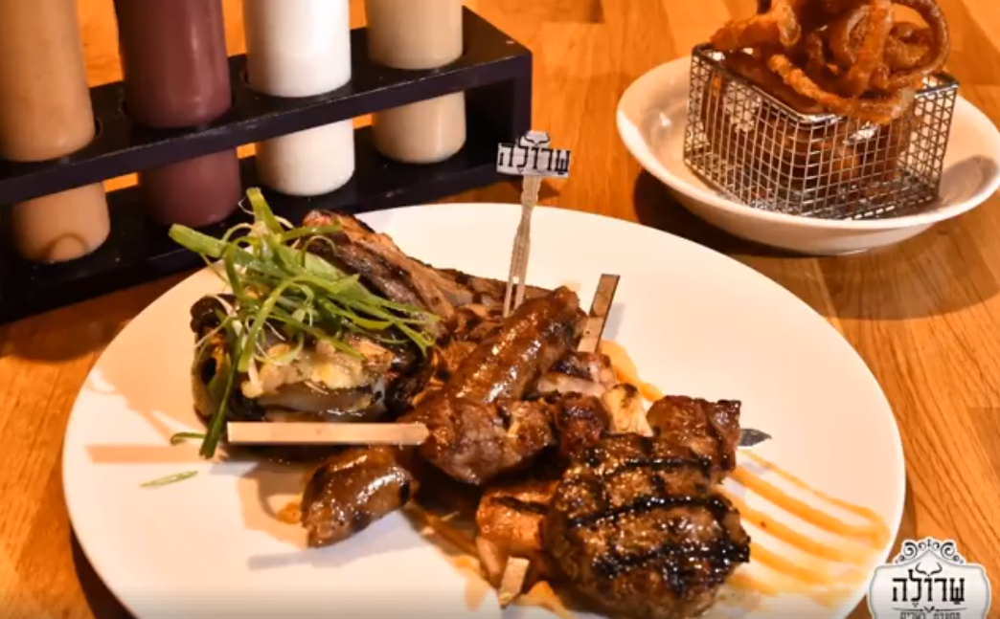

מטפסים באריאל
חצי יום חופש עם תכנית מנהיגות ערכית, חווייתיות
המשלבת למידה על רוח המנהיגות התנ"כית.
-

נמצא
בשומרון -

מתאים
לגיל 16+ -

שעתיים
עד חצי יום -

אביב
קיץ וסתיו -

50-150
ש"ח -

לא נגיש
לכיסא גלגלים


מה בתוכנית?
לא משנה איך הגעתם, פארק החבלים באריאל יעזור לכם לצאת אמיצים וחזקים יותר.
הפארק מציע מגוון רחב של מתקנים כגון:
המגדל האלפיני- מגדל טיפוס המתנשא לגובה של 17 מטר הכולל מסלולי טיפוס בעלי דרגות קושי ורמות טיפוס משתנות.
קפיצת האמונה- אחרי שרכשתם קצת בטחון עצמי וכוח, הגיע הזמן לעבור לקפיצת האמונה, כמו שהשם שלו מעיד לגביו, קפיצה מנקודות גובה שונות המתקן הינו ייחודי ומאתגר מאוד.
קרולינה- קיר טיפוס המתנשא לגובה של 12 מטר והמעוצב עבור משתתפים מכל רמות הטיפוס. קיימים ששה מסלולי טיפוס בעלי דרגות קושי משתנות
מה אוכלים?

במרחק של כ-5 דקות הליכה מאתנו נמצא מרכז קניות קטן בשם "מיני סנטר".
תוכלו למצוא שם מספר חנויות ומגוון מסעדות, המלצה שלנו, אל תפספסו את מסעדת הבשרים "שרולה" שנמצאת במקום.
חשוב לדעת
הגעה: באיזור הפארק יש חניה בשפע, ניתן להחנות גם ב"מיני סנטר", הנמצא כ-5 דקות הליכה מן הפארק.
בנוסף קווים: 961,960,963,964,101, יביאו אתכם לקרבת המקום.
מתי להגיע: מומלץ להגיע בתקופת הקיץ ובחגים